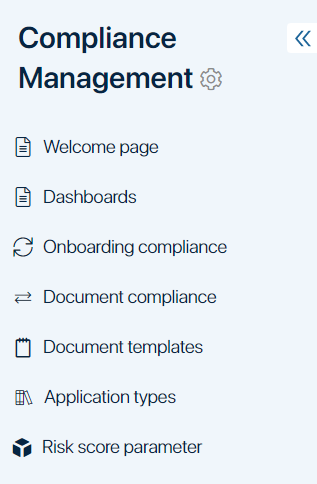
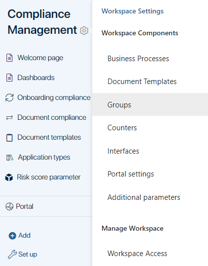
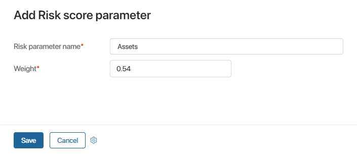

The Compliance Management business solution will help you manage customer documents and ensure that they comply with applicable laws and company policies.
The solution includes the Compliance Management workspace that can be used for two purposes:
- Checking client onboarding documents for compliance issues. When a new customer’s application is added to the platform, for example, when they fill out a web form on your website, the compliance checking and risk scoring process starts. Compliance managers can easily keep track of the procedure with pre-configured workflows and useful tools that the platform provides.
- Checking documents of existing customers for compliance issues. If a compliance manager finds out that a client’s documents are missing or invalid, the document request process starts. Not only the Compliance department but also the sales/customer service department and the customers themselves are engaged in the procedure.
Apps and business processes

The solution includes the following preset apps and pages:
App or page |
Business processes |
Welcome page |
No business processes. General description, video instructions. |
Dashboards (page) |
No business processes. Charts showing statistics on the Onboarding compliance and Document compliance apps. |
Onboarding compliance |
Compliance checking. |
Document compliance |
Document request processing. |
Document templates |
No business processes. Templates for documents that customers need to upload to the portal. |
Application types |
No business processes. Types of applications that customers can submit. |
Risk score parameter |
No business processes. Parameters needed to assess risks. |
Initial setup of the solution
- Import the pre-configured solution from the BRIX Store catalog or upload the .e365 file to the system.
- During the import process, you will be prompted to select users for each role configured in the workspace. If you didn’t do it right away, next to the workspace’s name click the gear icon and select Groups to set up user roles.

Groups and roles are used to:
- Configure the workspace’s visibility.
- Configure access to apps.
- Define who is going to participate in business processes.
In the Compliance Management workspace, there are two pre-configured roles.
- Customer service team member. This employee contacts customers and keeps track of document uploads when compliance issues are found. This user is part of the Document request processing business process.
- Compliance officer. This employee reviews applications according to the organization’s policies and sets risk scores. The employee can request additional information from the customer if the documents provided are not sufficient to approve the application. This user is part of the Compliance checking business process.
You can use groups and roles to configure access to app items. To do that, add users to groups or assign them roles and then restrict access in the app’s settings. Read more in the Access to app data article.
- Add information to the Companies and Contacts apps in the CRM workspace.
New items can be created in two ways:
- Manually. Click the creation button on the app page and fill out the form.
- Automatically. Integrate the platform with an external system using APIs. For example, app items can be created automatically as customers fill out a form on your website.
Начало внимание
Note that there is an additional prerequisite for using the Contracts app in the Compliance Management solution. All contacts you work with need to have the Full Name (code: _fullname) and Work email (code: _email) fields filled out. If they are left empty, the processes will not work correctly.
конец внимание
- In the Document templates app, add templates for documents that customers can submit. To add a new template, click the creation button, name the template, upload the template file to the form, and click Save. Templates that you create will be used in the Document request processing business process.
- In the Application types app, add types of applications that a customer can submit (for example, financial aid or business loan).
- Create parameters that will help you to assess compliance risks in the Risk score parameter app. These parameters will be used in the Compliance checking business process.

- Configure your email settings so that you can inform your customers when additional documents are needed. You must set up email notifications for the Document request processing business process to run correctly.
- Enable the Service Portal you can inform your customers when additional documents are needed. You must set up email notifications for the Document request processing business process to run correctly.